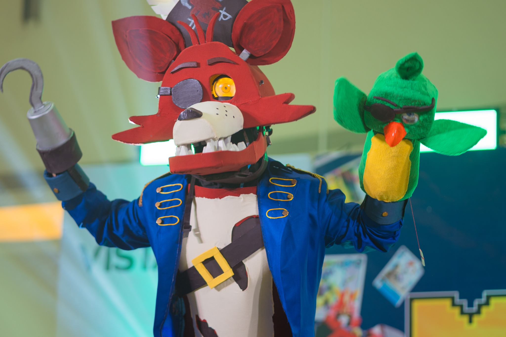
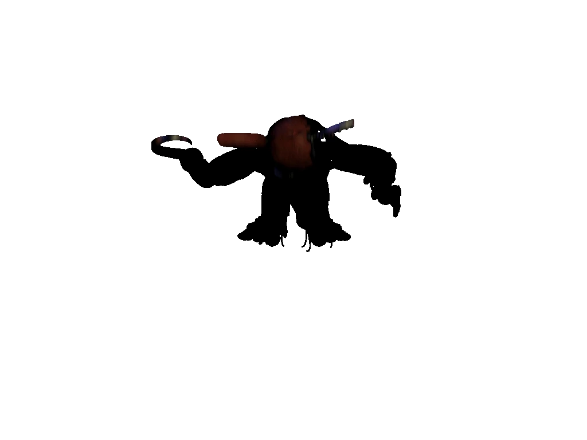

this is my first attempt at touring the municipality since the days of #AgaCosplay Invades where I visit random places (often the most notable ones) outside of conventions, so it has been an awesome experience!! I had a lot of fun chatting with fellow cosers who accompanied me throughout this journey, therefore I'm sharing these experiences for those who missed my presence or is interested in my next few ventures~
— LTR: Chowji, Shunni, Aga
— routemap for the Limay Leg as of 24 Aug 2024
I've begun planning this idea right after MalCon 2024 Bataan Leg as I've been fully invested in my venture into the cosplay space, all thanks to my cos moots and the incumbent CosMarias who opened my eyes to its extravagance!!
anyhow, I was thinking which province should I tour first to kick things off; but seeing that Bataan has been with me even way back before I moved to Italia on the second half of 2019 and that I've been into some of its notable places (aside from the fact that it's closer to home), made me realize that I have to make this as a starting point.
there's a lil difference, however, unlike all the previous announces I did over the years as a vtuber: since most cosers I personally encounter with doesn't have X (Twitter), I posted updates on Facebook instead; and somehow I made it specificlally for cos-related contexts (altho I might strem on there or post more vtuber updates).
— preview banner for Limay Leg, Act 1
I immediately provisioned the Facebook Event after prepping the website (the latter took a while than I thought so I kinda moved the schedule quite a bit), which gained some traction cuz of my cos moots!!
however, since my schedsheet has been updated and I had quite some legs to run cuz of circumstances (which I'll get to later); I decided that instead of Aug-Sep, I made it Aug-Dec!! (for more info, go check out the cosplay section of my website.)
this'll relate to the circumstance that we'll get to later, but here's the gist: I moved to a new province, so it took some time to get the event going.
come the day of the event, I planned ahead of schedule thinking that everything should be fine by then; but I got to a point where things aren't what they seem. this includes the duration of commute from my new neighborhood to the starting point, as well as prepping my outfits (which is the usual). took a while to prepare, so I had to adjust the time a coupla times.
first it was 12pm PHT (since the original start time was an hr before), then to 2:30pm PHT; but we all decided to arrive 30mins after the second one. kind of a hassle, but somehow the event-goers were alright with it as they've also been in some circumstances as mine.
anyhow, once we got around to our meeting place, everything went absolutely well!! took some pictures and some snacks, while enjoying some chit-chat. somehow I'm a little odd since I already came fully dressed-up. XD
on the next section, I'll introduce you to the two cosers who accompanied me during the inaugural tour!! you probably might have heard of or seen them before in previous conventions I attended, but they remain significant as I'll be inviting them to other legs if they want~
 — cred. Berlyndg for MalCon 2024
I first saw Chowji back at MalCon 2024 Bataan Leg D3 where he portrayed as Foxy (where he straight-up won hands-down)!! first impression, he's actually very chill; and he's usually engaging into the conversation~
somehow the funniest part that got us hooked to FNAF was that at one point he and I discussed about Wolverine jumpscare and how that ties in perfectly with Foxy's (from FNAF2), see GIFs below:

anyway, the key takeaway here is that he's pretty much into FNAF as much as I do, and somehow he came in a very simplistic fashion (albeit with a parrot puppet for some reason); but hey, I feel like liking the guy than I initially thought!!

I crossed paths with Shunni -- Shu-Shu as I call her -- waaay back at BACon 2024, tho I don't recall having interactions with her that day. I almost mistaken her for another coser cuz of this fact lmao
anyhow, the real interaction started on her end during one of my usual walkarounds at SM City Bataan (logged 25 Jun), where she replied that she saw me on the bus from Balanga to LimayüòÖ (she told me that she was too shy aaaaaa-)
I don't know how, but my guts told me to meet her whenever I do tours and whatnot; so it feels like this is a perfect opportunity!!
first impressions? she's also as chill as Chowji, but with a bit of shyness cuz I could feel that she came (kinda) unprepared?? altho I have to admit: seeing her up close also made me feel a bit shy cuz it's my first time seeing her up close and personal, so I kinda assumed that there's a personality switch between being a coser and irl?? xd
buuuuut being with her almost felt the same as being with Eri (the incumbent Third CosMaria) since they both radiated the same vibe!! on that note I might be able to invite Eri on the next legs..
in a nutshell; she might still be a bit shy as she stated in the replies, but I can sense that she'll be doing alright!!
I might invite her on the next leg, but should I give her a costume??
that she also has another alias -- Yāng Chi?? yeh, even I'm surprised!!
so here comes the part that might surprise everybody:
following the recent circumstances involving my recent actual employment, it might have seem that the dates have changed which seems to not align with the projected range of Aug-Sep.
HOWEVER; I can assure you that even tho it might be the case, I can still do the activities during the day!! as stipulated on the below vod, I was assigned to night shifts, so I still have my schedule on deck!! (just that they all have to be adjusted either way.)
quick nutshell: I AM NOT GOING ANYWHERE.
here are some photo ops that signify the start of the costour series!!
 — I've been fond of kittens and I've always wanted one as a kid~ (cred. Shunni)
— I've been fond of kittens and I've always wanted one as a kid~ (cred. Shunni)
— I kinda look fat in there.. (cred. Shunni)
— somehow Thrifty Shades is like my second home!! I've grown fond of the dog there ehehe (cred. Shunni)
— anybody saw us at 7-Eleven??
— I did the pose!! (cred. Shunni)
are you curious about more content other than the one mentioned here?? look no further -- I've compiled all of em (including past cosplays I did) in a unified G Drive folder!! each cosplays are grouped into folders named in YYYYMMDD dateformat -- with the first attempt (and my debut as a cosplayer) being 20231230!!
you can check em out by clicking the button below:
absolutely!! you're all set to check out some of the photos I've taken and the cosplays I did -- granted that you'll be using them with intent of goodwill. everyone deserves to treat each other with positivity, and it's the First MariaüçÉ's job to ensure that it stays that way!!
anyway, be sure to credit me aswell if you're planning on using em!! you can use the following included in the below blockquote:
photo taken for/by Mother Agatha, the First MariaüçÉ
check out her other works at https://bit.ly/AgaCosplay
if you're also planning on posting my cosplays, use the hashtag #AgaCosplay on your socials so that I can check it out in my spare time!! you can also send me the URL to your post assuming you posted em on my email at jelsa14018@gmail.com.
went through the article but still didn't understand anything? here's a quick summary to get you up to speed:
it has been an exhilarating experience, and I couldn't be even more
grateful than those two!! come Orion Leg
Balanga Leg Special I hope more cosers can join the movement and
make hobbies accessible to more areas!!
and, for those who wanted this to be a cosplay parade, then hit me up via email or Facebook!!
I'll do more stuff after this blog, but Orion Leg is next on the list -- 7
Sep!!
until the next blogpost!! üíöüçÉAga-chuu loves you uwuüíóüå∏
published